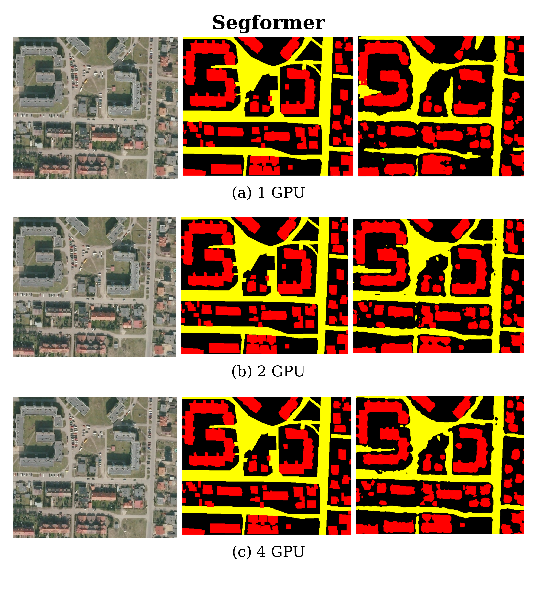
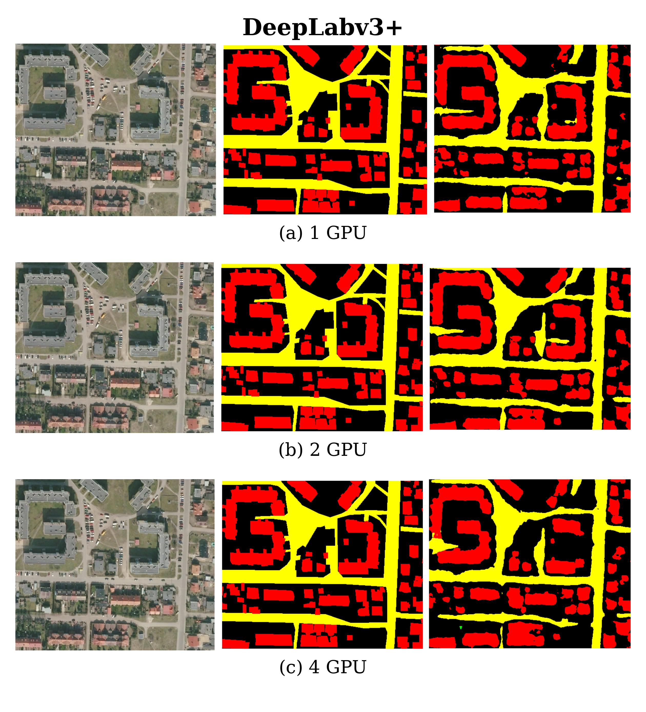
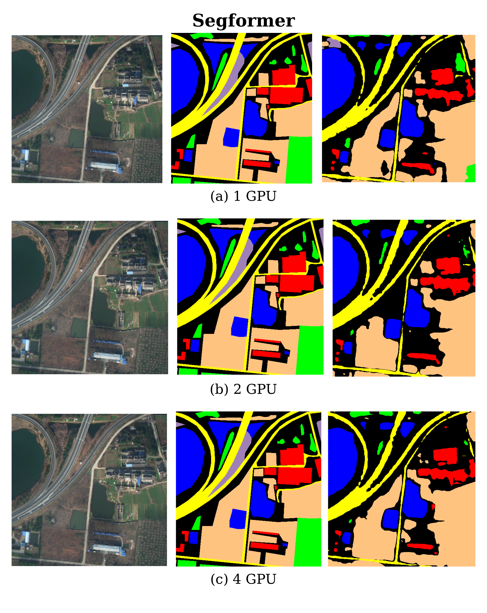
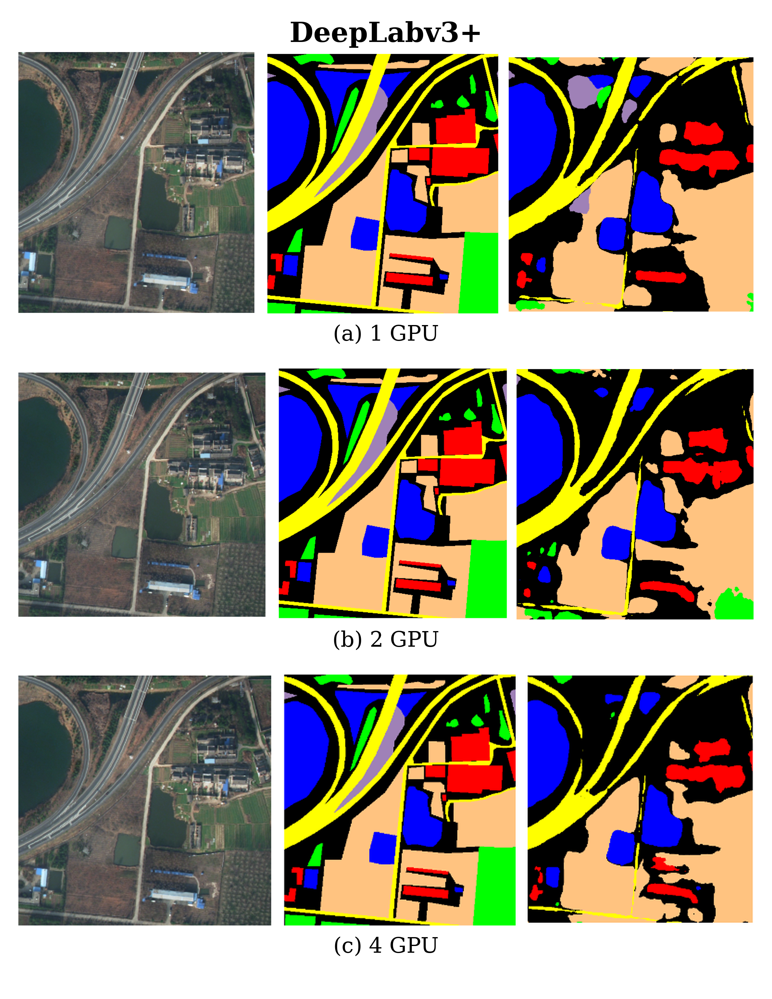

Can more GPUs buy time without buying noise?
Measure wall-clock reduction from one to four GPUs and report speedup and parallel efficiency from recorded epoch times.
Hardware scalingA controlled experimental study of distributed multi-GPU training, synchronized normalization, and model architecture for high-resolution remote-sensing imagery.
Remote-sensing segmentation is both a visual problem and a systems problem. This study keeps the learning recipe fixed while changing hardware scale, normalization behavior, and model family.
Measure wall-clock reduction from one to four GPUs and report speedup and parallel efficiency from recorded epoch times.
Hardware scalingCompare global SyncBatchNorm statistics with local statistics under the same data, optimizer, loss, and schedule.
Normalization ablationContrast atrous convolution in DeepLabV3+ / ResNet-50 with the hierarchical attention of SegFormer-B2.
CNN vs TransformerThe fastest configuration is not automatically the most accurate one—and synchronized BatchNorm is not a universal win.
Working thesis interpretationThe same 512×512 training interface meets two distinct label spaces. This makes the comparison more interpretable across data, architecture, and distributed system.
Urban and rural scenes resized to 512×512. Label 0 is ignored during focal loss and mean IoU.
Massive map rasters statically tiled into 512×512 patches. Label 255 is ignored for loss and metrics.
nvidia/mit-b2 · hierarchical TransformerEvery row below comes from the repository’s machine-readable tables. Filter by dataset to inspect the full recorded run matrix.
| Dataset | Architecture | GPU | BN mode | Final loss | mIoU | 50-epoch time |
|---|
Baseline rows are the 1-GPU references. Sync and Local rows are controlled multi-GPU ablations. CPU-only and 8-GPU logs are not present.
At one GPU, SegFormer leads DeepLabV3+ by +2.23 points on LoveDA and +2.51 points on LandCover.ai.
SegFormer reaches 3.81× on LoveDA and 3.90× on LandCover.ai at four GPUs. DeepLabV3+ reaches 2.58× and 3.78×.
LoveDA DeepLabV3+ falls from 0.4957 local to 0.4836 sync at four GPUs, while LandCover.ai DeepLabV3+ favors Sync at four GPUs.
Mean IoU hides class imbalance. Water and woodland are easier; barren land and roads remain more ambiguous in the final logged predictions.
Lowest class: Barren · 0.2525 IoU
Lowest class: Road · 0.6897 IoU
These are the mechanisms documented in the source scripts and methodology note.
Bilinear images, nearest-neighbor masks, and ImageNet normalization.
γ = 2.0; ignored labels excluded from loss and mean IoU.
Five linear warm-up epochs followed by cosine decay over 50 epochs.
Per-GPU batch 8. ResNet LR 1e-4 × world_size; SegFormer LR 6e-5 × world_size.
One process per GPU, DistributedSampler, globally reduced loss and metrics.
Sync variants convert BatchNorm; no-sync retains local statistics.
Qualitative collages are retained alongside code and logs so a reviewer can trace visual outputs back to their experiment family.




This is an observed experimental record, not a population estimate. The boundaries stay visible so future work can extend the study rather than overstate it.
Scripts, SLURM launches, normalized logs, tables, figures, and documentation are organized for panel review.